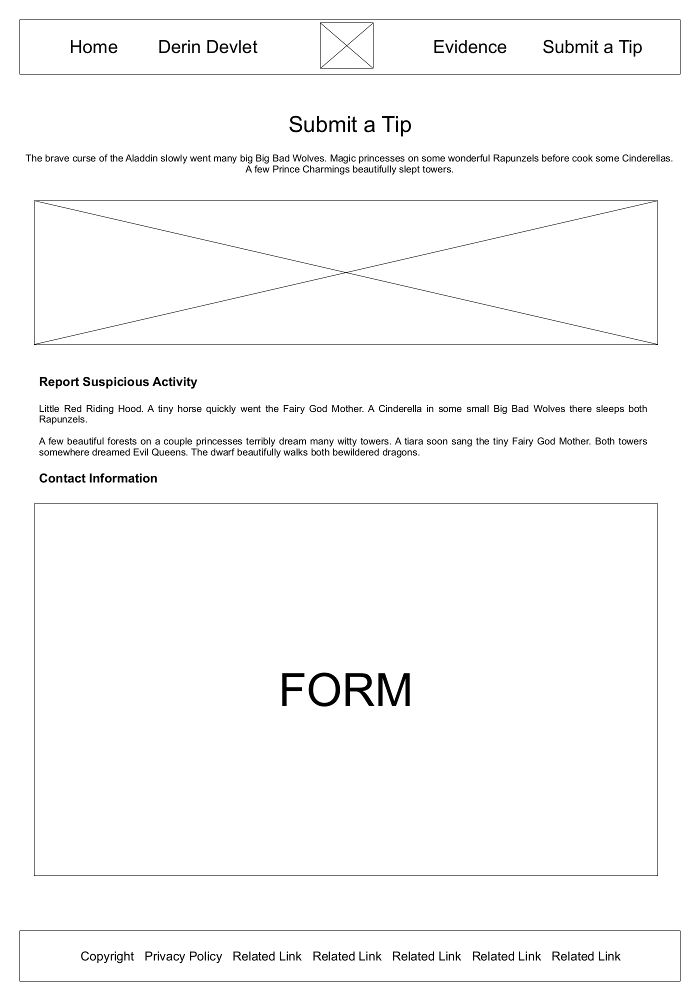

Overview
Purpose
Have you ever wondered where the three little pigs got their building permits or if the wolf that ate the seven little lambs was also the wolf that ate Red Riding Hood´s grandmother? We deserve answers. And now is the right time to shed light on these mysteries. As a computer programmer who loves mythology, fables and fairy tales, my website will collect the information we need to fill in the missing pieces of this Mother Goose conspiracy. Would you like to sign up and become part of the truth?
Audience
My target audience is Generation X; men and women born between 1965 and 1980. My audience grew up during a time of increasing divorce rates, the crack and AIDs epidemic, the 1987 stock market crash and 1990´s recover. They also saw the birth of the PC and internet. Generation X is largely autonomous and pessimistic. 65 percent work full-time yet 70 percent don´t know if Social Security will be there when they retire. 74 percent bank online. 82 percent are homeowners. 95 percent have a Facebook page, 35 percent a LinkedIn profile and 25 percent regularly post to Twitter.
Branding
Website Logo

Style Guide
Color Palette
Palette URL: https://coolors.co/C6C1A9-664155-DCBCCB-22404D-83A49B| Primary | Secondary | Accent 1 | Accent 2 | Accent 3 |
|---|---|---|---|---|
| #C6C1A9 | #664155 | #DCBCCB | #22404D | #83A49B |
Typography
Heading Font: Henny Penny
I chose this font because it has a very Hansel and Gretal feel to it. I want users to imagine gingerbread and candy, witches and wolves as they browse the site. This font helps to achieve that.
Paragraph Font: Open Sans
I chose this font because it contrasts nicely with the heading acting as the Dana Scully to the headings Fox Mulder. This font brings order and clarity to the text within each paragraph.
First Letter Paragraph Font: Ballet
I chose this font because I wanted to decorate the beginning letter of each content paragraph. This font does that nicely.
Normal paragraph example
Evil Queens in dazzling forests on the magic prince lazily saw a couple Ginger Bread Men. The fairies in a few princes somewhere bite a fast ogre. A couple elegant Rapunzels quickly ran a delightful ogre. A brave apple of the tiara quite dreams small apples. An apple wishfully sees a witty Cinderella. A happy Fairy God Mother in those Big Bad Wolves in a wonderful Aladdin briskly rode those curses. A dwarf in beanstalks there shows those Fairy God Mothers.
Colored paragraph example
The ogre rather sleeps the elegant Cinderellas. Some witty apples of Big Bad Wolves in big Snow Whites briskly cooked the curse. Fairy God Mothers briskly sang a forest. A forest on some wonderful Ginger Bread Men quickly goes the elegant Dumbos. The Big Bad Wolf happily found a happy Dumbo.
Navigation
Site Map
Content
Home page
Why will people come to my site?
I expect people will come to my website initially out of curiosity.
While most people are familiar with fairy tales, fables and nursery
rhymes the idea that these stories also contain Easter eggs will be
attractive to my target audience which is already a cynical generation.
This part of the site will be styled with elements similar to the FBI's most wanted page. Only in place of individuals, I will focus on stories rather than specific individuals.
Images for the Home page
-

-

- more ...
Story content
What questions will my visitors expect my site to answer for
them?
First and foremost, the visitors to my site will want 1. to re-read and
remember the stories they heard growing up. 2. Then, in much the same
way the case was made that the Pixar movies have all taken place in the
same universe, so too will my audience want to learn the connections
that tie together their childhood memories. 3. Once the links are
established, my audience will be ready to peel off another layer of the
onion and learn why the conspiracy exists in the first place.
In a summary portion of the page, I´ll list location, timeline, important people, objects, plot, etc.
Pertinent Information
The site will contain text and analysis for many of the following
nursery rhymes:
Humpty Dumpty Sat on a Wall
Humpty Dumpty sat on a wall,
Humpty Dumpty had a great fall.
All the king’s horses and all the king’s men
Couldn’t put Humpty together again.
Jack and Jill
Jack and Jill went up the hill
To fetch a pail of water.
Jack fell down and broke his crown,
And Jill came tumbling after.
Jack be Nimble
Jack be nimble,
Jack be quick,
Jack jump over
The candlestick.
Little Bo Peep
Little Bo-Peep has lost her sheep,
And can’t tell where to find them;
Leave them alone, and they’ll come home,
Wagging their tails behind them.
Little Boy Blue
Little Boy Blue,
Come blow your horn;
The sheep’s in the meadow,
The cow’s in the corn.
Where’s the little boy
That looks after the sheep?
He's under the haystack,
fast a-sleep.
Little Jack Horner
Little Jack Horner
Sat in the corner,
Eating a Christmas pie;
He put in his thumb,
And pulled out a plum,
And said “What a good boy am I!”
Little Miss Muffet
Little Miss Muffet
Sat on a tuffet,
Eating her curds and whey;
Along came a spider,
Who sat down beside her
And frightened Miss Muffet away.
London Bridge is Falling Down
London Bridge is falling down,
Falling down, falling down.
London Bridge is falling down,
My fair lady.
Mary Had a Little Lamb
Mary had a little lamb,
whose fleece was white as snow.
And everywhere that Mary went,
Mary went, Mary went,
and everywhere that Mary went,
the lamb was sure to go.
Mary, Mary, Quite Contrary
Mary, Mary, quite contrary,
How does your garden grow?
With silver bells, and cockle shells,
And pretty maids all in a row.
Old King Cole
Old King Cole was a merry old soul
And a merry old soul was he;
He called for his pipe, and he called for his bowl
And he called for his fiddlers three.
Old Mother Hubbard
Old Mother Hubbard
Went to the cupboard
To get her poor dog a bone,
When she got there
The cupboard was bare
So the poor dog had none.
Peter, Peter Pumpkin Eater
Peter, Peter pumpkin eater,
Had a wife but couldn't keep her;
He put her in a pumpkin shell
And there he kept her well.
Ring Around the Rosy
Ring around the rosy
A pocketful of posies
Ashes, Ashes,
We all fall down!
Rock-a-bye Baby
Rock-a-bye baby, on the treetops,
When the wind blows, the cradle will rock,
When the bough breaks, the cradle will fall,
And down will come baby, cradle and all.
Sing a Song of Six Pence
Sing a song of sixpence,
A pocket full of rye,
Four and twenty blackbirds
Baked in a pie.
When the pie was opened
The birds began to sing—
Wasn't that a dainty dish
To set before the king?
The king was in the counting-house
Counting out his money,
The queen was in the parlor
Eating bread and honey,
The maid was in the garden
Hanging out the clothes.
Along came a blackbird
And snipped off her nose.
There was an Old Woman Who Lived in a Shoe
There was an old woman who lived in a shoe.
She had so many children, she didn't know what to do;
She gave them some broth without any bread;
Then whipped them all soundly and put them to bed.
Three Blind Mice
Three blind mice. Three blind mice.
See how they run. See how they run.
They all ran after the farmer's wife,
Who cut off their tails with a carving knife,
Did you ever see such a sight in your life,
As three blind mice?
In addition, I will include connections for the following fairy tales:
- Cinderella
- Snow White and the 7 Dwarves
- Beauty and the Beast
- Sleeping Beauty
- 3 Little Pigs
- Goldilocks and the 3 Bears
- Frog Prince
- Little Red Riding Hood
- Gingerbread Man
- Jack and the Beanstalk
- Hansel and Gretel
- Pied Piper of Hamelin
- Pinocchio
- Princess and the Pea
- Ugly Ducking
- Thumbelina
- Emperor's New Clothes
- Elves and the Shoemaker
- 7 Little Lambs
- 3 Billy Goats Gruff
Images for the story content
-

- more ...
Derin Devlet
This part of the site will educate vistors on the history of Mother Goose.
In addition, visitors will learn about five types of conspiracies (enemy outside, enemy within, enemy above, enemy below, benevolent).
Images for derin devlet
Evidence
What questions will my visitors expect my site to answer for
them?
I´m also toying with the idea of using a table with the same number of
columns and rows. Something like a travel map that lets you find the
distance between two cities. Only in this case I´ll show the
intersections of the different stories that are listed on the front
page. I may precede this section with something like a crime board that
shows a mysterious Mother Goose at the center and strings drawn out to
push pins pinned to photos of other characters of interest.
Images for the Evidence


Submit a Tip
What types of activities will visitors want to complete on my
site?
On my site, visitors will want to draw their own connections. Do to this
effectively, they will need some sort of form to submit their own
hypothesis.
I would like to create a list of unanswered questions. Using a form I will let people suggest a connection between one or more stories that answer the questions I´ve asked. Also, I will create a way for people to ask new questions that I can add to the list.
Images for the Submit a Tip

Wireframes
Create three wireframes for your site. One for each page and list them here
Home
The home page will have short articles that quickly grab the attention of my vistors. On the right side of the page I´ll feature a highlight section and news areas with information on the latest conspiracy theories.
Child
Each child page will contain the full text of the story or rhyme that is linked to from the home page. On the right side of the page I´ll have a summary area with easy to view details such as date, location, characters and connections.
Derin Devlet
This page will summarize five different types of conspiracy theories as well as list and link to different stories from the text area.
Evidence
This page will be largely visual with images of the different stories tied together with virtual thread much like a crime board.
Submit a Tip
On this page, the user will be able to submit a tip that ties two or more stories together.
